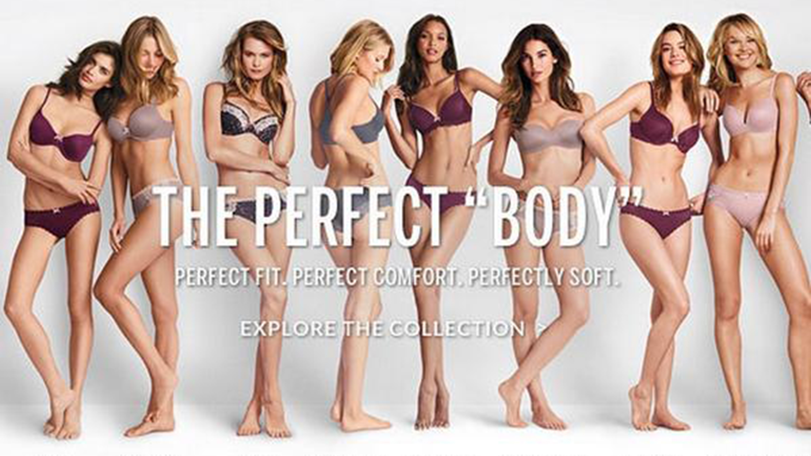
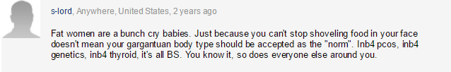

Victoria’s Secret

The Victoria’s Secret ad "The Perfect Body" posted around September 12,2015 shows light skin girls that are possiable size 0 with
big letters going across the picture saying "The Perfect Body". If I walked by this in the mall I’d feel like I’m not skinny enough
....Like I’m not that "Perfect body".

The Victoria’s Secret ad "The Perfect Body" posted around September 12,2015 shows light skin girls that are possiable size 0 with big letters going across the picture saying "The Perfect Body". If I walked by this in the mall I’d feel like I’m not skinny enough ....Like I’m not that "Perfect body".
Under the article by daily mail there was a comment section with multiple comments like the one above...Yes there were positive comments. But there was multiple comments of people putting other people down...Why should it matter how much you weigh? Why should it matter if the color of your skin is different?... IT SHOULDN’T. The way you look shouldn’t matter.
Brandy Melville
Brandy Melville a female cothling company put these signs up around there stories saying One size fits most
.
Normally the sign/tag says one size fits ALL but they decited to put tags and signs saying one size fits MOST. This sign is
basiclly saying there is a norm
and some people don't fit that norm
.
But This isn’t Just Young Women...But Young Men too
Abercrombie and fitch
/Belong.jpg)
Abrocrmbie and fitch CEO, Mike Jeffries has openly stated He doesn’t like fat
people. That he doesn’t want them wearing/promoting his brand.
He rather have the popular kids
wearing/promoting his brand. For a visual, He rather have the people in the top left picture promote his brand.
I asked my friend, How he would feel if he say the top left pictrue in a store front? He said
I'd feel like they only care about the jocky guy type.